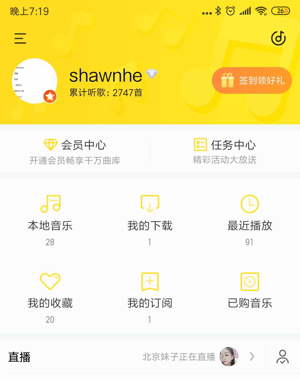

需求描述2-歌单被删除后的提示体系


检测到最近删除了1首歌曲 去恢复

需求背景
当检测到用户歌单内歌曲丢失时，需要给用户更合理的提示机制.


检测到最近删除了1首歌曲 去恢复


检测到最近删除了1首歌曲 去恢复
X
X
X
需求描述1-我的收藏及歌单详情页增加恢复歌单入口

恢复单曲
恢复歌单
-我的收藏/歌单详情页 增加恢复歌单入口
• 增加入口：
我的收藏页-增加一个【恢复单曲】的入口
歌单详情页-增加一个【恢复歌单】的入口
• 点击逻辑：
点击均跳转到【歌单恢复列表页】
我的收藏/自建歌单-提示用户恢复歌单
-歌单删除提示的主体逻辑：
1、删除提示包括的数据主体是——“我的收藏”和“自建歌单”
2、当“我的收藏”和“自建歌单”中发生了“删除歌单”or“删除歌单内歌曲”的数据变动时，需要在“我的页-自建歌单头部”及“对应歌单详情页”内均出现提示框
3、提示的具体逻辑：（我的收藏页的提示，跟歌单详情页保持一致）

图示1—自建歌单区域的提示
图示2—自建歌单详情页的提示
图示3—我的收藏页的提示
-跳转：
点击去恢复，则跳转“恢复歌单列表页”
客户端请求时机：
登录完成时，请求一次提示数据的服务；
云同步回来，check发现数据发生了变化时，及update操作，则弹出提示
（这个地方的入口展示最大限度）
-跳转：
点击去恢复，则跳转“恢复歌单详情页”（对应歌单的）
-跳转：
点击去恢复，则跳转“恢复歌单详情页”（我的收藏详情）